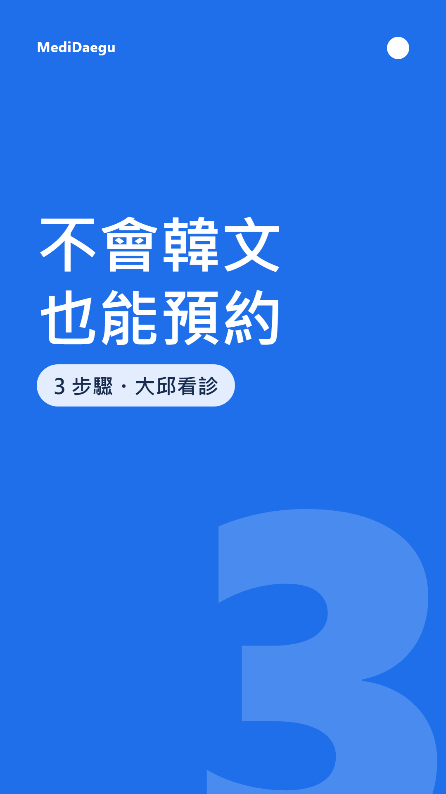
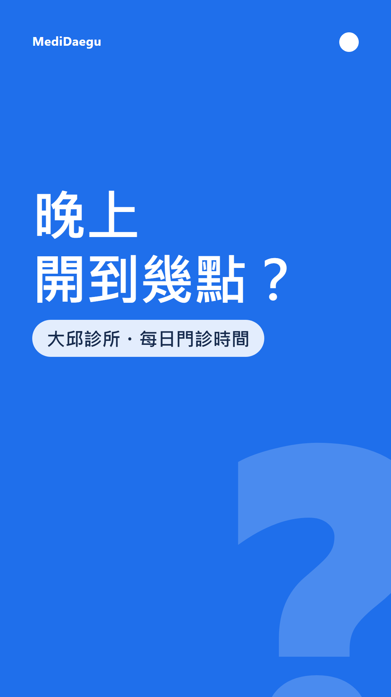

병원·시술 광고 없이 "대구에서 피부과를 예약하는 법"을 알려 주는 정보 계정이에요. 틱톡에서 처음 보고, 인스타에서 저장하고, 프로필 링크로 메디대구에 들어오는 흐름이에요. 문구는 번체 중국어(대만)와 한국어 번역을 함께 적었어요.
대만 공식 조사(TWNIC 2025 台灣網路報告, 2,142명)에서 틱톡은 아직 소수예요. 짧은 영상은 대부분이 보니까 영상은 만들고, 인스타 릴스를 주 채널로 두고 같은 영상을 틱톡·유튜브 쇼츠에도 올려요. 상담 연결은 LINE이 자연스러워요.
| 항목 | 값 |
|---|---|
| 짧은 영상 시청 (최근 3개월, 릴스·쇼츠 포함) | 78.46% |
| 틱톡 사용 (최근 3개월) · 18~29세 | 25.16% · 37.98% |
| 가장 많이 쓰는 SNS: Facebook · Instagram · Threads · 틱톡 | 51.38 · 21.07 · 4.57 · 4.19% |
| 가장 많이 쓰는 메신저: LINE | 90.26% |
출처: TWNIC 2025 台灣網路報告 (조사 2025-07-28 ~ 09-01). 자세한 내용은 리서치 노트 「대만-SNS-이용-현황.md」.
VOC에서 홍보·협찬 영상에 대한 불신이 보여서 "협찬 없음 · 출처 표시"를 계정 소개에 넣었어요. 계정 이름은 아직 정하지 않았어요(예시).
VOC 근거: "어디서 어떻게 예약하는지 말해 주는 사람이 없다"(병원 정보 중 예약 방법·채널 10건, 가장 많음), "연락했는데 답이 없다"(강도 2).

썸네일 1080×1920 · 인스타 릴스 표지로도 사용| 시간 | 화면 | 자막 (번체 중국어 / 한국어) |
|---|---|---|
| 0~2초 | 대구 동성로 거리 영상 | 想去大邱做皮膚管理，卻不知道怎麼預約？대구에서 피부관리 받고 싶은데 예약 방법을 모르겠다면? |
| 2~8초 | 메디대구 웹 화면 녹화: 언어를 中文(繁體)로, 통화를 TWD로 | ① 先切換成繁體中文，價格自動換算台幣① 번체 중국어로 바꾸면 가격이 대만달러로 바로 바뀌어요 |
| 8~14초 | 지도에서 피부과 필터 → 병원 카드의 진료시간·상담 언어 칸 | ② 用地圖找皮膚科，先看門診時間和諮詢語言② 지도에서 피부과를 찾고, 진료시간과 상담 언어부터 보세요 |
| 14~21초 | "상담하기" → 날짜·시간 고르기 → 요청 보내기 → 상태 "확인 중" | ③ 送出諮詢需求，診所回覆的狀態都看得到③ 상담 요청을 보내면 병원이 답했는지 상태로 보여요 |
| 21~25초 | 프로필 링크 안내 화면 | 不用再到處傳訊息等回覆 ➜ 連結在主頁여기저기 메시지 보내고 기다리지 않아도 돼요 → 링크는 프로필에 |
VOC 근거: "밤에 가고 싶은데 몇 시까지 하나"(T11-013), "시간 얼마나 걸렸나" — 진료시간 질문. 메디대구 등록 기관 대부분의 진료시간이 들어 있어서 바로 답할 수 있는 질문이에요.

썸네일 1080×1920| 시간 | 화면 | 자막 (번체 중국어 / 한국어) |
|---|---|---|
| 0~3초 | 댓글 스티커 확대 | 有人問：大邱的診所晚上開到幾點？이런 질문이 왔어요: 대구 클리닉은 밤 몇 시까지 해요? |
| 3~10초 | 병원 카드의 요일별 진료시간 확대 | 每家診所不一樣，點開卡片就能看到每天的門診時間병원마다 달라요. 카드를 누르면 요일별 진료시간이 보여요 |
| 10~15초 | 프로필 링크 안내 | 時間會變動，出發前再跟診所確認一次 ✔시간은 바뀔 수 있어요. 출발 전에 병원에 한 번 더 확인하세요 |
VOC 근거: "엔화로 얼마?", "몇 엔이었어요?"(가격 19건 중 가격 정보 없음 16건), "체험가로 예약될까 불안", "단품은 안 해 주고 묶음 권유"(유일한 강도 3). 금액은 넣지 않고 보는 법만 알려 줘요. 옆으로 넘겨 보세요.
○○ 자리는 실제 게시 전에 공공데이터 가격 범위로 채우고 출처·기준일을 함께 넣어요. 환율은 메디대구 웹이 한국은행 환율로 바꿔 보여 주는 값을 그대로 써요.
해외 대상 게시물이 의료법의 "외국인환자 유치 국내광고" 금지에 걸리는지는 아직 판단 근거가 없어요. 실제 계정 운영 전에 팀원 2(가격·규제)가 확인해요.